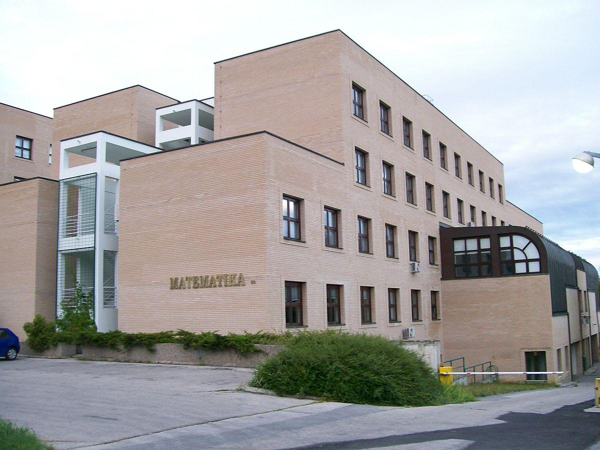

CECC 202020th Central European Conference on CryptologyJune 24 - 26, 2020, Zagreb, CroatiaOrganized by QuantiXLie Center of Excellence
and
|
 |
Program Committee:
|
|
Local Organizing Committee:
|
The aim of the conference is to bring together researchers in all aspects of cryptology, including but not limited to:
Important dates:
Selected papers will be published in the Conference Proceedings,
as a special issue of the journal
Rad HAZU, Matematičke znanosti.
The journal is published by Croatian Academy of Sciences and Arts.
It is indexed in Scopus, Emerging Sources Citation Index (a part of Web of Science Core Collection),
MathSciNet and Zentralblatt MATH.
A brief history of The Central European Conference on Cryptology:
Contact: Andrej Dujella (duje@math.hr)